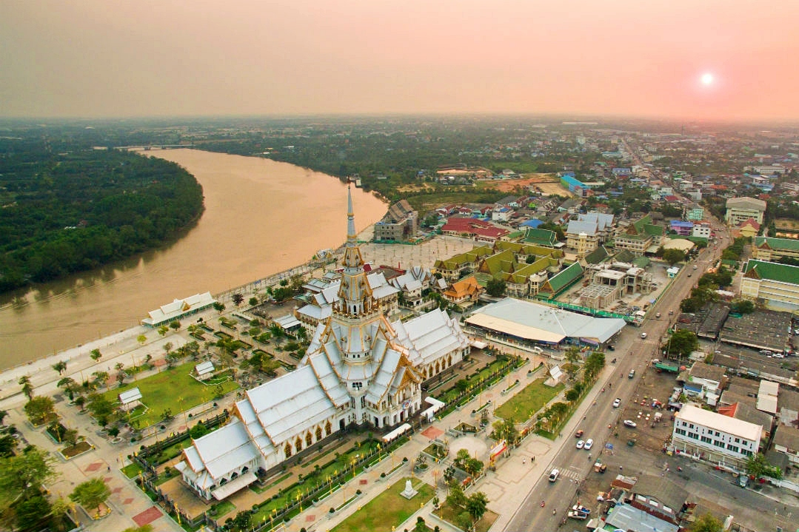
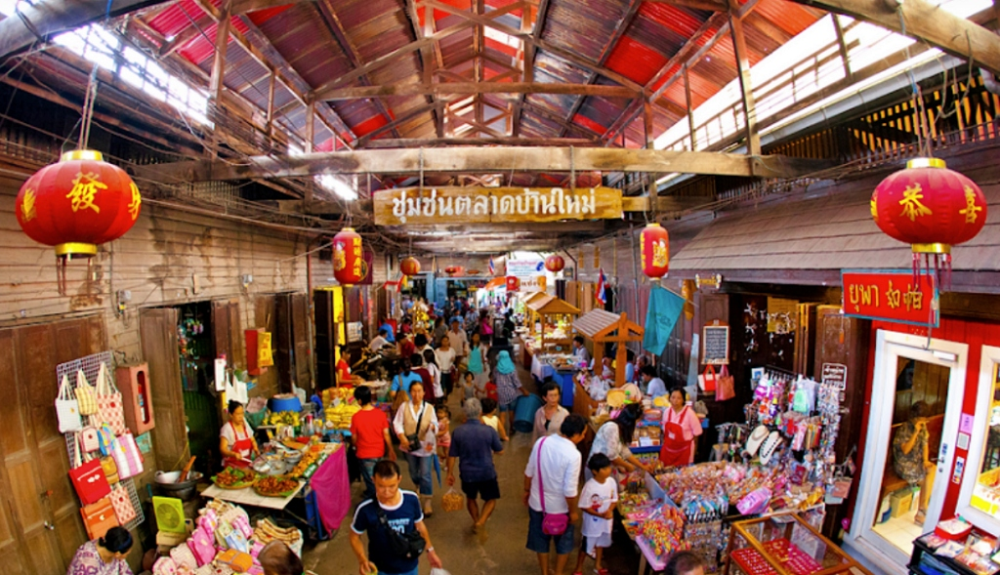
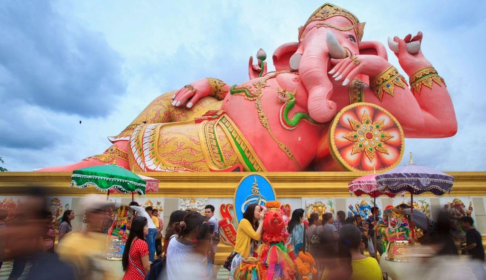
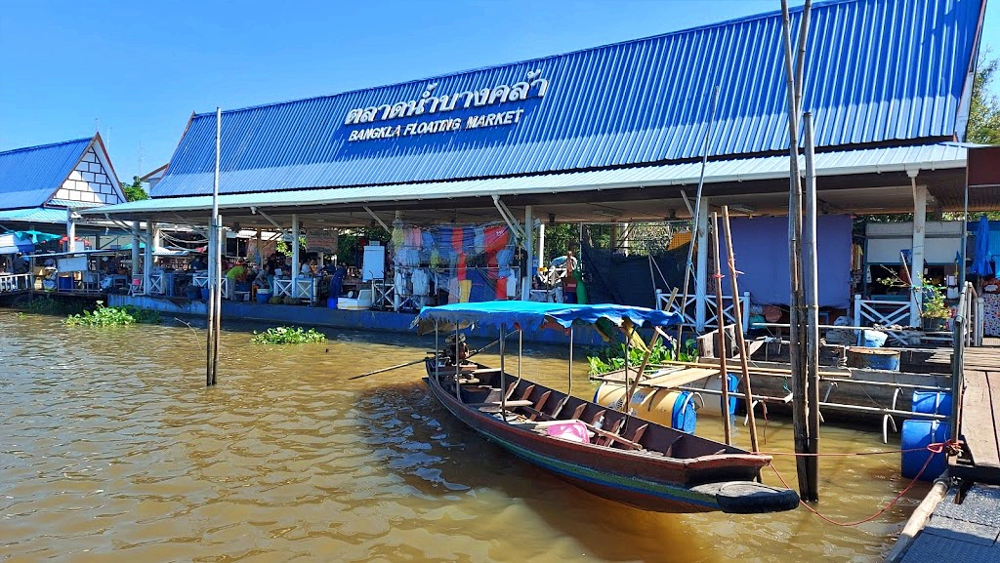
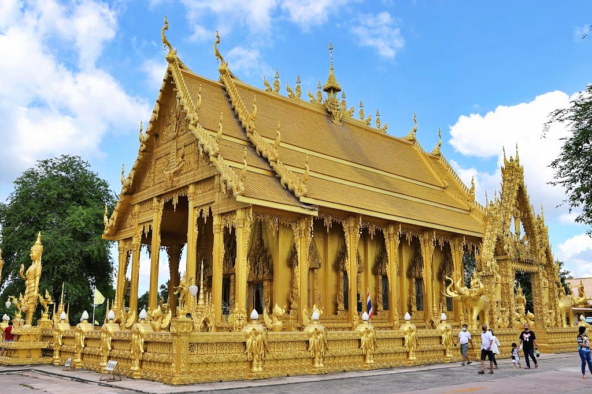

วัดโสธรวรารามวรวิหาร
วัดโสธรวรารามวรวิหาร หรือที่เราเรียกกันว่า วัดหลวงพ่อโสธร เดิมชื่อว่า วัดหงษ์ สร้างในสมัยอยุธยาตอนปลาย ตั้งอยู่บนถนนเทพคุณากร ต.หน้าเมือง อ.เมือง จ.ฉะเชิงเทรา เป็นที่ประดิษฐานหลวงพ่อพุทธโสธร พระพุทธรูปคู่บ้านคู่เมืองของชาวจังหวัดฉะเชิงเทรา ซึ่งเป็นพระพุทธรูปปูนปั้นปางสมาธิ ฝีมือช่างล้านช้าง ในตำนานเล่าว่าลอยมาตามแม่น้ำบางปะกง ประทับอยู่ในพระอุโบสถหลังใหม่ ที่สร้างครอบพระอุโบสถหลังเดิม โดยที่ไม่มีการเคลื่อนย้ายองค์หลวงพ่อพุทธโสธร และพระพุทธรูปทั้ง 18 องค์ ภายในพระอุโบสถมีความงดงามมาก มีภาพจิตรกรรมฝาผนังโดยรอบ เป็นเรื่องราวของสีทันดรสมุทร, จตุโลกบาล, สวรรค์ชั้นดาวดึงส์, พรหมโลก, ดวงดาว และจักรวาล ถือเป็นวัดประจำจังหวัดฉะเชิงเทรา ที่ใครไปจะต้องแวะกราบไหว้หลวงพ่อโสธร เพื่อความเป็นสิริมงคลแก่ชีวิต ช่วงวันหยุดจะมีผู้คนมาสักการะขอพรท่านเป็นจำนวนมาก เมื่อสำเร็จผลดังคำขอ มักจะกลับมาถวายไข่ต้ม
ตลาดบ้านใหม่ เมืองแปดริ้ว
ตลาดใหม่ เมืองแปดริ้ว ตลาดโบราณริมแม่น้ำบางปะกง ตั้งอยู่บนถนนศุภกิจ ต.หน้าเมือง อ.เมือง จ.ฉะเชิงเทรา ที่นี่จัดเป็นพิพิธภัณฑ์ที่มีชีวิต เพราะเป็นตลาดเก่าแก่อายุกว่า 100 ปี และเป็นชุมชนของชาวไทยเชื้อสายจีน โดยจะเป็นบ้านไม้สุดคลาสสิค ให้กลิ่นอายวิถีชีวิตริมน้ำแบบดั้งเดิม ตามบ้านเรือนมีภาพเพนท์ตามจุดต่างๆ แวะแชะภาพอัพลงโซเชียล คุณสามารถมาเดินเที่ยว หาของกิน และถ่ายรูปเป็นที่ระลึกกันได้ ภายในตลาดมีร้านค้าร้านอาหารเพียบ จำหน่ายของกิน ของใช้ ของฝาก และของเล่น สำหรับตลาดบ้านใหม่ เมืองแปดริ้วนั้น เปิดเฉพาะวันศุกร์ เสาร์ อาทิตย์ และวันหยุดนักขัตฤกษ์ เปิดเก้าโมงเช้า ปิดห้าโมงเย็น
วัดสมานรัตนาราม
วัดสมานรัตนาราม เป็นวัดริมแม่น้ำบางปะกง ในต.ก้อนแก้ว อ.เมือง จ.ฉะเชิงเทรา โดดเด่นไปด้วยองค์พระพิฆเนศปางนอนเสวยสุข เนื้อสีชมพู ลักษณะนั่งตะแคงข้าง พระหัตถ์ซ้ายถืองาช้าง พระหัตถ์ขวาถือดอกบัว ที่มีความสูงถึง 16 เมตร รอบฐานมีพระพิฆเนศทั้ง 32 ปาง ชาวฉะเชิงเทราและนักท่องเที่ยวนิยมมากราบไหว้ขอพรองค์พระพิฆเนศ โดยเชื่อว่าจะนำมาซึ่งโชคลาภ มั่งคั่ง และนำความสุขสบายมาให้ นอกจากนี้ภายในวัดยังมีสิ่งศักดิ์สิทธิ์อีกมากมาย อาทิ เจ้าแม่กวนอิม พระราหู พระพรหม หลวงพ่อโต หลวงพ่อองค์ดำ พญานาค นาคาธิบดีศรีสุทโธ เป็นต้น มาเที่ยวฉะเชิงเทรา อย่าลืมแวะมากราบไหว้องค์พระพิฆเนศ
ตลาดน้ำบางคล้า
ตลาดน้ำบางคล้า ตลาดริมแม่น้ำบางปะกง ในอำเภอบางคล้า จังหวัดฉะเชิงเทรา เกิดขึ้นภายใต้นโยบายส่งเสริมการท่องเที่ยวของจังหวัด เพลิดเพลินไปกับการช็อปปิ้ง จับจ่ายใช้สอยสินค้าจากชุมชนในท้องถิ่น อิ่มอร่อยกับอาหารจากฝีมือชาวบ้าน รวมถึงผลผลิตทางการเกษตรตามฤดูกาล โดยตลาดจะมีทั้งบนโป๊ะและบนเรือ ซึ่งพ่อค้าแม่ค้าจะขายบนเรือเลย จอดเทียบขายให้กับนักท่องเที่ยว ให้อารมณ์เดินตลาดน้ำแบบเรียลๆ ภายในตลาดมีร้านค้าหลากหลาย อาหารคาวอาหารหวาน เก็บท้องรอไปกินที่ตลาดกันได้เลย อีกทั้งที่นี่ยังมีความพิเศษในเรื่องของทัศนียภาพที่สวยงามของริมฝั่งแม่น้ำบางปะกง มีธรรมชาติที่อุดมสมบูรณ์ หรือใครอยากชมบ้านเมืองแถวนั้น มีบริการเรือเที่ยว ล่องรอบเกาะลัด สัมผัสวิถีชีวิตริมน้ำ หากสนใจสามารถสอบถามได้ที่ท่าเรือแถวตลาดได้เลย
วัดปากน้ำโจ้โล้
เลยตลาดน้ำบางคล้ามาหน่อย จะเจอวัดปากน้ำโจ้โล้ เป็นวัดริมแม่น้ำบางปะกง ตั้งอยู่บนถนนวนะภูติ ต.ปากน้ำ อ.บางคล้า จ.ฉะเชิงเทรา หน้าวัดมีคลองไหล่ผ่านไปรวมกับแม่น้ำบางปะกง ในอดีตเคยเป็นพื้นที่ตั้งทัพของพม่า แต่ได้ต่อสู้และแพ้พ่ายให้กับทัพของสมเด็จพระเจ้าตากสินมหาราช เมื่อเข้าไปในวัดแล้ว คุณจะตื่นตาตื่นใจไปกับโบสถ์สีทองเหลืองอร่ามทั้งหลัง ทั้งภายใน ภายนอก และกำแพงแก้วต่างก็เป็นสีทอง หลังคาโบสถ์ประดับด้วยพญานาค ด้านในมีองค์หลวงพ่อโต จำลองมาจากพระพุทธชินราช เป็นองค์ประธาน ด้านหน้าโบสถ์มีรูปปั้นสมเด็จพระเจ้าตากสินมหาราชสีเหลืองทอง ทั้งองค์เช่นกัน ชาวบ้านและนักท่องเที่ยวนิยมมาสักการะกราบไหว้หลวงพ่อโต และสมเด็จพระเจ้าตากสินมหาราช อธิษฐานขอพรให้สำเร็จดังที่หวัง เมื่อสำเร็จแล้ว จะกลับมาถวายรูปปั้นไก่ชน
แหล่งที่มาของข้อมูล
checkinchill.com
จัดทำด้วย ❤ โดย นิติธร นันทสินธ์ 65003263019
65003263019@mail.rru.ac.th